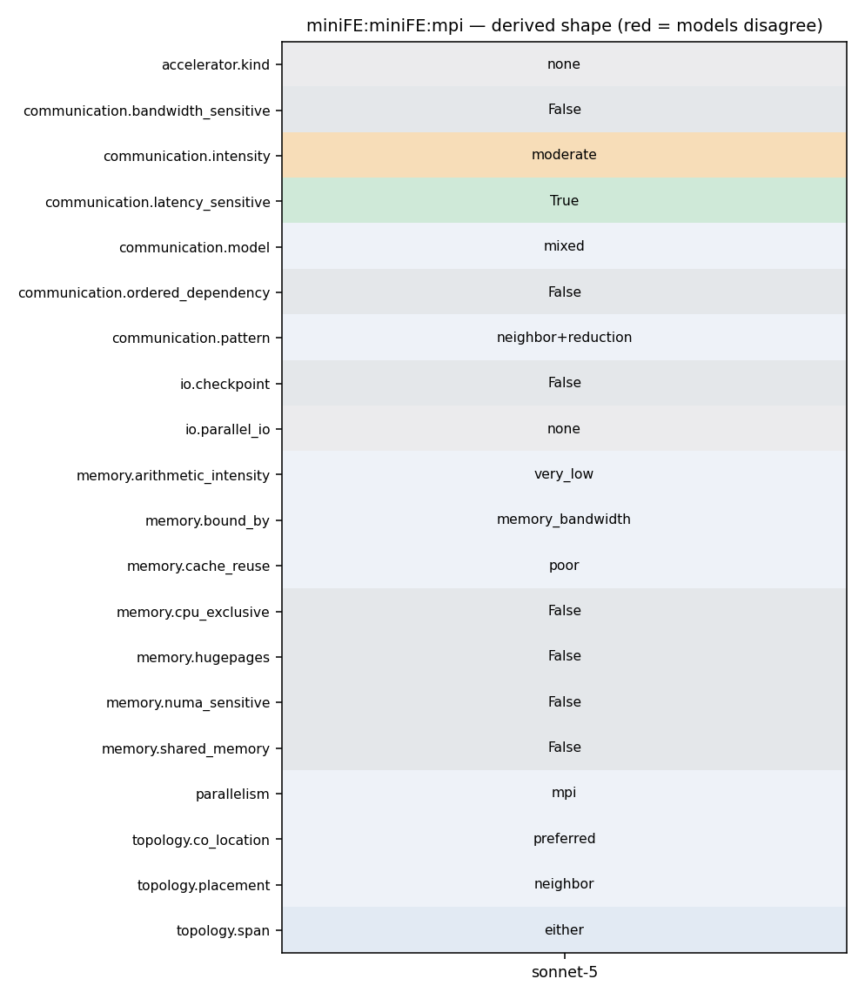

mpirun -np <N> miniFE.x -nx <X> -ny <Y> -nz <Z> (ref/basic/run_one_test: mpirun -np ${np} miniFE.x nx=${nx} ny=${ny} nz=${nz})
1 #ifndef _exchange_externals_hpp_ 2 #define _exchange_externals_hpp_ 3 4 //@HEADER 5 // ************************************************************************ 6 // 7 // MiniFE: Simple Finite Element Assembly and Solve 8 // Copyright (2006-2013) Sandia Corporation 9 // 10 // Under terms of Contract DE-AC04-94AL85000, there is a non-exclusive 11 // license for use of this work by or on behalf of the U.S. Government. 12 // 13 // This library is free software; you can redistribute it and/or modify 14 // it under the terms of the GNU Lesser General Public License as 15 // published by the Free Software Foundation; either version 2.1 of the 16 // License, or (at your option) any later version. 17 // 18 // This library is distributed in the hope that it will be useful, but 19 // WITHOUT ANY WARRANTY; without even the implied warranty of 20 // MERCHANTABILITY or FITNESS FOR A PARTICULAR PURPOSE. See the GNU 21 // Lesser General Public License for more details. 22 // 23 // You should have received a copy of the GNU Lesser General Public 24 // License along with this library; if not, write to the Free Software
131 132 TICK(); waxpby(one, b, -one, Ap, r); TOCK(tWAXPY); 133 134 TICK(); rtrans = dot(r, r); TOCK(tDOT); 135 136 //std::cout << "rtrans="<<rtrans<<std::endl; 137 138 normr = std::sqrt(rtrans); 139 140 if (myproc == 0) { 141 std::cout << "Initial Residual = "<< normr << std::endl; 142 } 143 144 magnitude_type brkdown_tol = std::numeric_limits<magnitude_type>::epsilon(); 145 146 #ifdef MINIFE_DEBUG 147 std::ostream& os = outstream(); 148 os << "brkdown_tol = " << brkdown_tol << std::endl; 149 #endif 150 151 152 for(LocalOrdinalType k=1; k <= max_iter && normr > tolerance; ++k) { 153 if (k == 1) { 154 TICK(); waxpby(one, r, zero, r, p); TOCK(tWAXPY);
95 // Post receives first 96 for(int i=0; i<num_neighbors; ++i) { 97 int n_recv = recv_length[i]; 98 MPI_Irecv(x_external, n_recv, mpi_dtype, neighbors[i], MPI_MY_TAG, 99 MPI_COMM_WORLD, &request[i]); 100 x_external += n_recv; 101 } 102 103 #ifdef MINIFE_DEBUG 104 os << "launched recvs\n"; 105 #endif 106 107 // 108 // Fill up send buffer 109 // 110 111 size_t total_to_be_sent = elements_to_send.size(); 112 #ifdef MINIFE_DEBUG 113 os << "total_to_be_sent: " << total_to_be_sent << std::endl; 114 #endif 115 116 for(size_t i=0; i<total_to_be_sent; ++i) { 117 #ifdef MINIFE_DEBUG 118 //expensive index range-check:
180 #ifdef HAVE_MPI 181 magnitude local_dot = result, global_dot = 0; 182 MPI_Datatype mpi_dtype = TypeTraits<magnitude>::mpi_type(); 183 MPI_Allreduce(&local_dot, &global_dot, 1, mpi_dtype, MPI_SUM, MPI_COMM_WORLD); 184 return global_dot; 185 #else 186 return result;
93 MPI_Datatype mpi_dtype = TypeTraits<Scalar>::mpi_type(); 94 95 // Post receives first 96 for(int i=0; i<num_neighbors; ++i) { 97 int n_recv = recv_length[i]; 98 MPI_Irecv(x_external, n_recv, mpi_dtype, neighbors[i], MPI_MY_TAG, 99 MPI_COMM_WORLD, &request[i]); 100 x_external += n_recv; 101 } 102 103 #ifdef MINIFE_DEBUG 104 os << "launched recvs\n"; 105 #endif 106 107 // 108 // Fill up send buffer 109 // 110 111 size_t total_to_be_sent = elements_to_send.size(); 112 #ifdef MINIFE_DEBUG 113 os << "total_to_be_sent: " << total_to_be_sent << std::endl; 114 #endif 115 116 for(size_t i=0; i<total_to_be_sent; ++i) {
131 132 TICK(); waxpby(one, b, -one, Ap, r); TOCK(tWAXPY); 133 134 TICK(); rtrans = dot(r, r); TOCK(tDOT); 135 136 //std::cout << "rtrans="<<rtrans<<std::endl; 137 138 normr = std::sqrt(rtrans); 139 140 if (myproc == 0) { 141 std::cout << "Initial Residual = "<< normr << std::endl; 142 } 143 144 magnitude_type brkdown_tol = std::numeric_limits<magnitude_type>::epsilon(); 145 146 #ifdef MINIFE_DEBUG 147 std::ostream& os = outstream(); 148 os << "brkdown_tol = " << brkdown_tol << std::endl; 149 #endif 150 151 152 for(LocalOrdinalType k=1; k <= max_iter && normr > tolerance; ++k) { 153 if (k == 1) { 154 TICK(); waxpby(one, r, zero, r, p); TOCK(tWAXPY);
20 LDFLAGS= 21 LIBS= 22 23 CXX=mpicxx 24 CC=mpicc 25 26 #CXX=g++ 27 #CC=gcc
31 #include <cstdlib> 32 #include <iostream> 33 34 #ifdef HAVE_MPI 35 #include <mpi.h> 36 #endif 37 38 #include <outstream.hpp> 39 40 #include <TypeTraits.hpp> 41 42 namespace miniFE { 43 44 template<typename MatrixType, 45 typename VectorType> 46 void 47 exchange_externals(MatrixType& A, 48 VectorType& x) 49 { 50 #ifdef HAVE_MPI 51 #ifdef MINIFE_DEBUG 52 std::ostream& os = outstream(); 53 os << "entering exchange_externals\n"; 54 #endif
149 #endif 150 151 152 for(LocalOrdinalType k=1; k <= max_iter && normr > tolerance; ++k) { 153 if (k == 1) { 154 TICK(); waxpby(one, r, zero, r, p); TOCK(tWAXPY); 155 } 156 else { 157 oldrtrans = rtrans; 158 TICK(); rtrans = dot(r, r); TOCK(tDOT); 159 magnitude_type beta = rtrans/oldrtrans; 160 TICK(); waxpby(one, r, beta, p, p); TOCK(tWAXPY); 161 } 162
93 MPI_Datatype mpi_dtype = TypeTraits<Scalar>::mpi_type(); 94 95 // Post receives first 96 for(int i=0; i<num_neighbors; ++i) { 97 int n_recv = recv_length[i]; 98 MPI_Irecv(x_external, n_recv, mpi_dtype, neighbors[i], MPI_MY_TAG, 99 MPI_COMM_WORLD, &request[i]); 100 x_external += n_recv; 101 } 102 103 #ifdef MINIFE_DEBUG 104 os << "launched recvs\n"; 105 #endif 106 107 // 108 // Fill up send buffer 109 // 110 111 size_t total_to_be_sent = elements_to_send.size(); 112 #ifdef MINIFE_DEBUG 113 os << "total_to_be_sent: " << total_to_be_sent << std::endl; 114 #endif 115 116 for(size_t i=0; i<total_to_be_sent; ++i) {
93 MPI_Datatype mpi_dtype = TypeTraits<Scalar>::mpi_type(); 94 95 // Post receives first 96 for(int i=0; i<num_neighbors; ++i) { 97 int n_recv = recv_length[i]; 98 MPI_Irecv(x_external, n_recv, mpi_dtype, neighbors[i], MPI_MY_TAG, 99 MPI_COMM_WORLD, &request[i]); 100 x_external += n_recv; 101 } 102 103 #ifdef MINIFE_DEBUG 104 os << "launched recvs\n"; 105 #endif 106 107 // 108 // Fill up send buffer 109 // 110 111 size_t total_to_be_sent = elements_to_send.size(); 112 #ifdef MINIFE_DEBUG 113 os << "total_to_be_sent: " << total_to_be_sent << std::endl; 114 #endif 115 116 for(size_t i=0; i<total_to_be_sent; ++i) {
41 42 ----------------------------------------------------------------------- 43 44 3. Scaling the MiniFE Mantevo Mini-App Problem 45 46 To scale the MiniFE problem size, we typically apply the following 47 rules: 48 49 (1) Either: double the X dimension for one run, then double the 50 Y-dimension for the next run. Keep the Z-dimension fixed. This is useful 51 for some application runs. 52 53 (2) Or: define a base problem size (nx * ny * nz) and then use the 54 following equation set nz = ny = nz = cbrt( (base_nx * base_ny * 55 base_nz) * (number of MPI ranks) ). This is useful for some other 56 application runs. 57 58 Note - that (1) and (2) create different communication volumes/patterns 59 and execute over threaded compute resources. They are both of interest. 60 61 ----------------------------------------------------------------------- 62 63 4. Bugs/Issues/Questions with MiniFE?